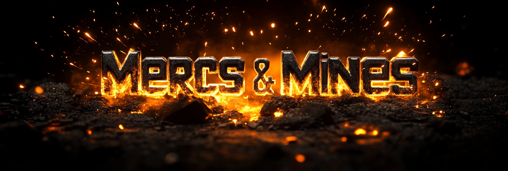

Warning: High Mortality Rate
Strip-Mine the Ash
And Send Expendable
Mercenaries to Die For
Absurd Corporate
Profits$$$
A 60-day mobile grand strategy campaign of meat-grinder tactics, volatile magma-mining, and corporate sabotage — while factions and cults fight for control of a planet that can barely breathe.
Initialize neural link via Solana wallet
How Will You Destroy (or Save!) Planet Gunmetal?
Every server runs parallel victory tickers simultaneously — numerous possible endings for the same world. Every contract you take, every story event you respond to, every faction or cult you align with – nudges the server towards one of them. Did you assist the Hamster God-King to enslave mankind in the planetary biscuit factory? Were you too busy fighting your rivals, accidentally handing the world to the Trash Khan Raccoon Horde? Nobody knows which ending is coming. Not even the player who causes it.
The Hamster Throne
The Psychic Space Hamsters have claimed dominance over the planet. Squeaker VII has expressed satisfaction — everyone is adjusting. Biscuit quotas have increased significantly.
The Trash-Khan's Horde
You underestimated the trash pandas. The Raccoon Biker Gang Horde floods the map. All player bases are crushed beneath their diminutive boots. There is no prize pool. There is only trash.
The Jump Gate
Combine your efforts to rebuild the jump gates and reconnect the planet to the wider galaxy, bringing an end to the infighting and restoring order. Most players consider this theoretically impossible. A few try anyway.
Emperor Bob
Classified — Clearance Level: Inexplicable
Classified: Seeker Exclusive
Forged on Solana. Native to the Seeker.
Not a browser game with a wallet bolted on. Built for the device, sold on the device, and priced like something you actually own.
Your Wallet Is Your Account
No sign-up form. No email. No password. You sign in with your Solana wallet and you're in. First boot links the device to your profile, and that is the last piece of admin you will ever do here. Your first voluntary action is playing the game, not filling in a form.
One Price. No Surprises.
Your first campaign is free on Seeker. Every campaign after that is $3.99, paid once, in USDC, SOL or SKR. No subscription. No loot boxes. No energy timers. No premium currency priced to confuse you. You know exactly what you are buying before you buy it.
Nothing You Earn Is For Sale
Commanders who die come home as playable cards. So do the ones who survive. If you want the memory made permanent, three dollars mints a soulbound memorial — welded to your wallet, unsellable by design. It cannot be traded, so it cannot be speculation. It is a war memorial, not an asset.
Planet Gunmetal · the locals · what you are actually signing up for
Initiative Parameters
60-Day Wipe Cycles
Every campaign is a self-contained apocalyptic conflict. No pay-to-win carryover. No veteran advantage. Everyone starts anew in the ash. After sixty days the story is over, the world as we know it ends, and the survivors go in the cabinet. A new campaign begins — and you get to see, through the choices you make, how differently it could have gone on Planet Gunmetal.
The Meat-Grinder
Equip terrified recruits with heavy ordnance and watch them die to protect your mining rigs. Replaceable. Expendable. Technically insured. Your Commanders, however, are not replaceable. They have specialties, rank up slowly, develop trauma, and can die permanently. Spend your recruits accordingly.
Historical Trophies
Win or lose, the campaign leaves a record. Your Commanders come home as playable cards — the dead and the living both. Blow yourself up attacking a mining rig and your Commander still cards, with the manner of their death attached for the amusement of future generations. It is not a winner's trophy cabinet. It is a verifiable record of every apocalypse you helped create.